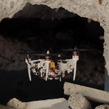
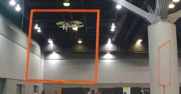
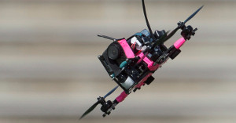
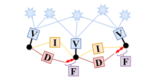

About Me
I am currently a Software Engineer at Lyft Level 5, Lyft's Self-Driving Division, working on motion planning and decision making for driverless cars.
I received a Ph.D. in motion planning and control for Micro Aerial Vehicles, under the supervision of Prof. Davide Scaramuzza at the Robotics and Perception Group, University of Zurich. During my doctoral studies, I worked at the intersection between perception and action. More specifically, I developed techniques to exploit motion planning and control to cope with the limitations of onboard sensors for high-speed flight with small-scale, lightweight, vision-based autonomous quadrotors. Check out my PhD thesis for further details. Previously, I received a B.Sc. and a M.Sc in Automation Engineering from University of Naples “Federico II”, with focus on dynamical systems, robotics and control.
Drop me an email at falanga@ifi.uzh.ch if you want to get in touch, or check out my profiles on LinkedIn and Google Scholar.
Awards and Achievements
Science Robotics cover page
My research on event-based obstacle avoidance was featured on the cover page of Science Robotics (see issue here).
Drone Hero Award 2019
Winner of the category Most Innovative Drone (see list of winners).
NASA Tech Briefs "Create the Future" contest 2019
Winner of the category Aerospace and Defense (see list of winners).
Media Coverage
Agile Quadrotor Flight through Narrow Gaps using Onboard Sensing and Computing
The Foldable Drone: a Morphing Quadrotor that can Squeeze and Fly
- Reuters
- BBC
- TechCrunch
- The Verge
- CNET
- CNBC
- World Economic Forum
- IEEE Spectrum
- Popular Mechanics
- Robohub
- SlashGear
Rapid, Dynamic Obstacle Avoidance with an Event-based Camera
Dynamic Obstacle Avoidance for Quadrotors with Event Cameras
Publications
Peer-reviewed Journal Papers

-

-

-

H. Moon, J. Martinez-Carranza, T. Cieslewski, M. Faessler, D. Falanga, A. Simovic, D. Scaramuzza, S. Li, M. Ozo, C. De Wagter, G. de Croon, S. Hwang, S. Jung, H. Shim, H. Kim, M. Park, T. C. Au, S. J. Kim
Challenges and implemented technologies used in autonomous drone racing
Springer: Intelligent Service Robotics Series, 2019
-

-

-